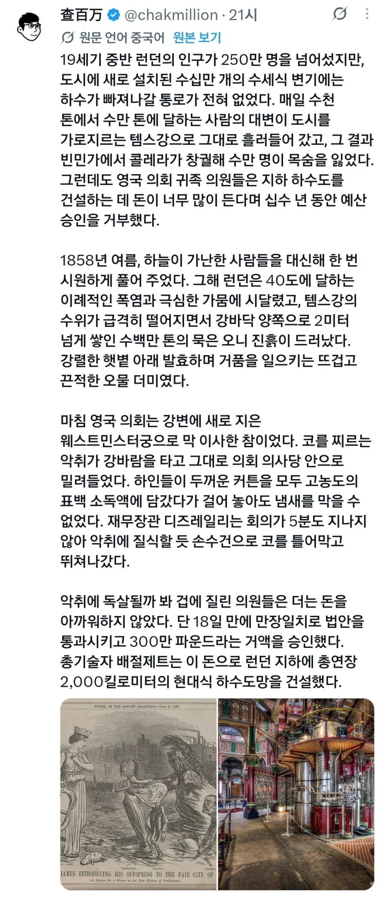

https://bbs.ruliweb.com/best/board/300143/read/77422786

https://bbs.ruliweb.com/best/board/300143/read/77422786

샹크스ㅡㅡㅡㅡㅡㅡㅡㅡㅡㅡㅡㅡㅡㅡㅡㅡㅡ
시대를 막론하고 고위직 족같은 새키들은 직접 지들이 겪어봐야 움직이지.시부러럴
와 ㅅㅂ놈들 진짜
"영국"

유럽 14세기~19세기쯤 썰은 항상 들을때마다 존나 재밌음 ㅋㅋㅋ
이러니까 판사들이 우린 법대로 한 거 뿐이다 이러는 변명이 안믿기는거임
지들 일이였어봐 어떻게 해서든 해결하려고하지
그래서 재판엔 당한 판사 배정 안하자너
원래 제 눈에 가시가 남의 큰 상처보다 더 아픈 법임.
판사는 객관적이고 냉철하게 법에 의해 판단하는데 당연히 본인이 당해도 직업윤리를 지켜야겠지만 인간인 이상 아픔만큼 휘두르려는 기질이 생길수밖에.
석궁 맞았더니 정신 차렸잖아ㅋㅋ
이래야 영국이지

인간은 겪어보기 전 까진 공감할 줄 모른다
근데 이해 되는게 저 하수도 건설 가격이 당대에 얼만가 하면 수에즈 운하 매입 가격이랑 비슷했음.
당대에도 어마어마한 금액이었음 ㅋㅋ
영국에 국한된것보다 권력자새끼들의 속성같은...
먼 하수도가 저리 화려햐?

빅토리아 특
딱히 빅토리하지 않음
직접 똥 맛을 봐야 난민이니, 법대로 할뿐이라느니, 초범이라느니, 교화라느니 하는 좆같은 소리를 못할텐데 참 아쉬워
어느나라나 독같네
그리고.. 기왕 한번 크게 짓는거 화끈하게 2미터 짜리 수도 말고 2배로 4미터 짜리 수도로 갈기시죠
- 음.,... 그런가. 그럼 ㄱㄱ 그럼 2배로 좋아지겠군(4배임)
그렇게 대충 지름을 2배 늘린 수도를 구성한 덕에.. 현대에 이르러서도 잘 쓰고 있는 걸로 암.
새벽에 적는 거라 팩트 체크 잘 못함. 기억나는데로 서술함. 틀리면 내말이 틀림. 니말 맞음.
선동이 너무 심하네.
갑자기 진행된것도 아니고, 그게 귀족들이 돈쓰기 싫어서도 아님. 애초에 의회에서 집행하는 돈은 세금인데 그걸 왜 아끼냐?
예로부터 모든 정치인은 세금을 팍팍 써서 지지율을 얻으려고 하는데.
1850년 — 하수도 계획안 137개 검토
1852년 — 배절제트가 수석 엔지니어로 승진
이전 엔지니어 프랭크 포스터(Frank Forster)가 추진하던 광역 하수도 구상 계승
1855년 — 런던 광역사업위원회(MBW) 설립
의회가 새로운 법률을 통해 런던 전체의 대규모 공공사업을 담당할 조직 설립.
1856년 — 배절제트의 구체적인 설계안 제출
4월에는 템스강 남쪽, 5월에는 북쪽의 하수도 설계를 제출했고, 6월 중앙정부의 승인을 요청
1856~1857년 — 설계안 반려 및 재검토
중앙정부와 광역사업위원회는 오수 배출 위치와 사업비를 놓고 충돌
1858년 —> 이게 본문에 나오는 대악취 사건임.
손놓고 있던게 아니고 계속 진행되고 있던 프로젝트임.
갈등의 원인도 귀족 나으리들이 돈쓰기 싫어서가 아니라,
"런던 하수를 어디에 버릴것인가?" 라는 공학적 논쟁임
베젤제트의 원안은 템스강 하류로 오수를 버리는거였는데
템스강은 감조하천이라 밀물 잘못들면 다시 그 오수가 도심으로 돌아올 수 있음. 그래서 배출구를 조정한 재설계를 했는데, 이 검토를 맡은 세 명의 전문 엔지니어들이 또 다른 설계를 주장하면서 논쟁이 복잡해진거임. 어디 배출해야 안전한지, 어떤 설계가 더 오래갈건지 라는 공학적 논쟁이라고.
그리고 두번째로, 중앙정부-지방정부간의 재정부담 문제가 있는데
저 오수 문제 담당하는 광역사업위원회는 중앙정부 소속이고 그 중앙정부에서 더 멀리, 더 튼튼한 설계로 하라고 기존 설계에 빠꾸를 놓음. 런던시의 입장은 "중앙정부가 더 비싼 설계를 요구하면서 추가비용은 왜 지역 납세자에게 떠넘기냐?" 인거고. 중앙정부 입장은 "하수도가 부실한데 그럼 승인을 그냥 내주리?" 인거임. 오히려 이 때 의원들 발언 기록 보면 "저렴하게 설계했다가 나중에 추가공사비용 더 드는거 아닌가?(로버트 로우)" 라던지 "300만 파운드로 충분하다는 근거가 뭐임? 더 필요한거 아니야?" 라는 얘기도 나옴.
선과 악, 권력자와 서민의 구도가 잘 먹히니까 자주 써먹는건 이해하는데 그렇다고 선동을 하고 다니면 안되는거지
https://api.parliament.uk/historic-hansard/commons/1858/jun/18/state-of-the-thames-question?
여기 1858년 6월 하원 의사록 첨부함
또 또 언더도그마네
고위권력자는 이기적이고 악이고
하층민들은 선이냐
밑에 봐봐 ㅋㅋㅋ 다 설명해줘도 귀막고 삐딱하게 구는 애들 있다니까 ㅋㅋㅋ
근데 안이 이미 마련돼 있었다해도 국가재정으로 왜 지방하수도 건설하냐고 안해주고 버팅기던건 맞구만 찾아보니. 결국 대악취 사건이 강력한 트리거가 된건 맞으니 원글도 선동이라고만 치부하는건 잘못인 듯.
"국가재정으로 왜 지방하수도 건설하냐고" 가 아니라, "저 추가비용을 왜 중앙정부 재정으로 하는가?" 가 핵심임.
한국이야 거의 다 중앙정부가 하니까 저게 뭐가 문제냐 싶겠지만, 특정 지역에만(그것도 돈 많은 수도 핵심지역) 이득이 되는 산업의 "추가비용" 까지 왜 전국민이 대줘야 하는가? 라는 문제는 자주 일어나는 논쟁임.
저것도 결국 런던 주민들에게 거둔 돈으로 마무리됐고
당장 서울 쓰레기 문제를 모든 지역에서 거둔 돈으로 해결하겠다고 하면 좋아할 지방 있을까? 바로 옆인 경기나 인천도 우리가 왜 서울 쓰레기받이 해야하냐고 불만인데
요약 : 중요하지 않다+예산도 초과다
지 진영에 이로운 판단 내린 엔지니어들 끌어와서 런던 보건 지랄낫음에도 서로 양보안하고 미루다 본인들 코밑에 지랄나니까 미뤄둔 안건 예산 안따지고 통과시킴
중요포인트 : 내 지역 내 주머니 예산
ㅋㅋ걍 너는 딱 그정도 이해하고 사셈 ㅋㅋㅋ 다 써줘도 이해를 못하네
뭐가 "지 진영에 이로운 판단 내린 엔지니어" 임? ㅋㅋㅋ 안전설비 강화하자고 하는게 어느 진영의 진영논리야? ㅋㅋㅋ
ㅂㅅㅅㄲ야 니가 레퍼로 써놓은 링크에 대놓고 지들끼리 논리 밥싸움하고 있는데 시발아ㅋㅋㅋ 그것도 화자가 많은것도 아니고 대충 반박하고 싶어서 가져온거 같은데 적어도 니가 뭘 가져왔는진 확인하고 씨부려라ㅋㅋㅋㅋ
"지 진영에 이로운 판단" 이 뭔지 지껄여 보라니까 좆병신새끼야 ㅋㅋㅋ 왜? 그건 말 못하겠어?
그야 내가 안 죽는데 그런 지상(紙上)의 일로 하릴없이 시간을 떠나보낼 수 있는거지. 내가 좋아하는 인디 가수의 노래 가사중에 이런 말이 있음.
"나는 익사하고 있는데 너는 물에 대해 설명하고 있어
숨을 쉴 수조차 없는데 나는 너의 어항 안에 갇혀 있어"
너가 말한 "정부는 신중했을 뿐 관심이 없다거나 악한 것이 아니었다"라는 말이 성립하려면 최소한 그렇게 수년간 전염병과 질병이 창궐하고 똥물이 역류하는 상황에서 빈민들을 구제할 비상조치라도 있었어야 하는거 아니냐. 이건 언더도그마도 뭣도 아님. 그 신중하게 의논할 시간을 누가 부담하고 고통받느냐의 차이지.
예컨대 너가 올린 하원회의록에 첫 문단 마지막에서 R.D.Mangles 씨는 국가를 원색적으로, 그러니까 선명하게 공격함.
God had given to them a most magnificent river, and they bad turned it into the vilest of sewers. The country could provide £320,000,000 for railways, but £1,000,000 or £2,000,000 could not be applied to diminish this great evil.
신은 우리 나라에 가장 장엄한 강을 주었으나, 당신네들은 그것을 비천한 하수구로 만들어버렸다. 이 국가는 철도에는 3억 2천만 파운드를 쓸 수 있는 나라지만, 그 거대한 악(오수 문제)을 줄이는데는 1-2백만 파운드도 쓸 수 없는 나라이다.
그리고 나서 그 수도 사업 위원회의 Cubitt 씨는, 너가 말하던 "우리가 그 많은 시간동안 하릴없이 무엇을 하고 있었는지"를 합리화하지. 이건 너가 말한 부분이니까 넘어가고.
그리고 난 다음에 Warren 씨에 의한 공격이 다시 시작되는데, 내가 말하는 바인 "도대체 그 시간동안 하릴없이 자네들이 만들어 낸 것이 뭐냐?"라는 말임.
Well, to enable this new Board to deal with this matter, it was armed with all manner of powers, of even the most arbitrary character—powers of making, repairing, closing, enlarging, narrowing, altering the direction, and increasing or diminishing the number of sewers, the grand object being, as recited in the Act, "to prevent all or any part of the Sewage within the Metropolis from flowing or passing into the River Thames in or near to the Metropolis;"—and the House should observe that the Board was to cause "all such sewers and works to be completed on or before the 31st December, 1860." The Act came into operation on the 1st January, 1856,—this was the 18th June, 1858, and what had been hitherto done? Nothing; and, on the contrary, matters had got worse—infinitely worse than before.
자, 이 새 위원회가 이 문제를 다룰 수 있도록 온갖 권한이, 심지어 지극히 자의적인 성격의 권한까지 부여되었다. 하수도를 만들고, 수리하고, 폐쇄하고, 넓히고, 좁히고, 방향을 바꾸고, 그 수를 늘리거나 줄이는 권한이다. 법에 명시된 원대한 목적은 "수도 내의 하수 전부 또는 일부가 수도 안이나 그 부근에서 템스강으로 흘러들거나 유입되는 것을 막는 것"이었다. 그리고 하원은 위원회가 "그러한 모든 하수도와 공사를 1860년 12월 31일 또는 그 이전에 완공"하도록 되어 있었다는 점에 주목해야 한다. 그 법은 1856년 1월 1일에 시행되었다. 오늘은 1858년 6월 18일인데, 지금까지 무엇이 이루어졌는가? 아무것도 없다. 오히려 사태는 악화되었다. 전보다 한없이 악화되었다.
그리고 나서 대충 몇명의 귀족들, John Manners 경, Benjamin 경 등등 귀족 나으리들이 튀어나와서 "의사당이 냄새가 나는데 우리의 건강을 지키기 위해(그때까지만 해도 악취는 병의 원인이라는 관념이 정설이었음) 뭘 하고 있느냐"하는 개소리나 하고, 거부권이 충분치 않다, 권한과 위원회-정부간 관계 설정이 잘못되었다, 어쩌고저쩌고 하며 개소리나 반복함.
요컨대 내가 지목하는 권력이 의논하는 중에 사람은 죽어나간다는 문제에 대해 하원의원들은 1856년에 이미 정부를 공격하고 있었고, 정부는 허망한 종이 위의 논리들을 가지고 염병을 하고 있음. 그 19세기에 철도를 짓는데는 3억 파운드를 쏟아붓는 나라에서 꼴랑 몇백만 파운드를 가지고 "세금"이 어쩌고 저쩌고 하고 있었다는 거지.
너도 당해봐.
너 이거 막아봐.
서양 도시들은 서쪽이 부촌이고 동쪽이 서민동네인 이유가 이거지
편서풍을 타고 악취나 스모그가 동쪽으로 흐름
그래서 프랑스 혁명을 의미있게 봐야함.
옆에 귀족 목이 날아가야 내가 잘못했구나 생각이 들지.
도중에 말이 뭐가 좀 이상하다 했는데
오니 자체가 [(사전참고)汚泥 - 더러운 흙. 특히 오염 물질을 포함한 진흙을 이른다.]라서
'오니 진흙'하면 오염물질 흙흙임 엌ㅋㅋㅋㅋㅋ
역시 공권력을 공격해야 함.
판사 보이스피싱 하던가, 판사 전세사기 하던가.
성자라도 상대하는줄 알았나